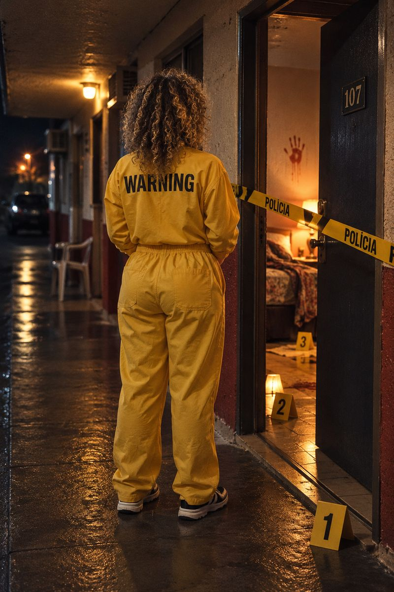
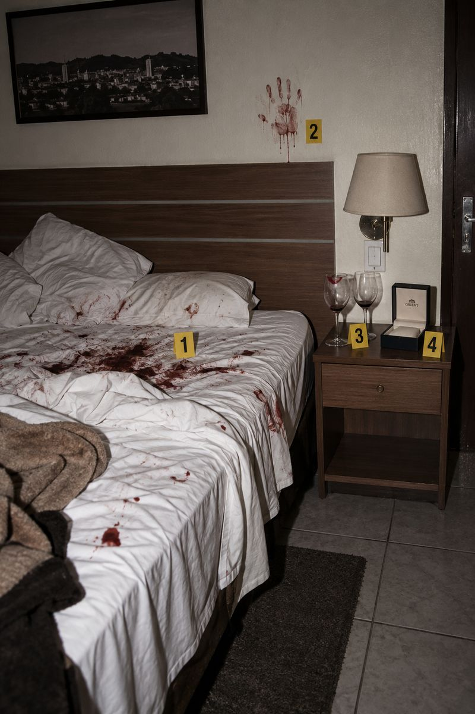
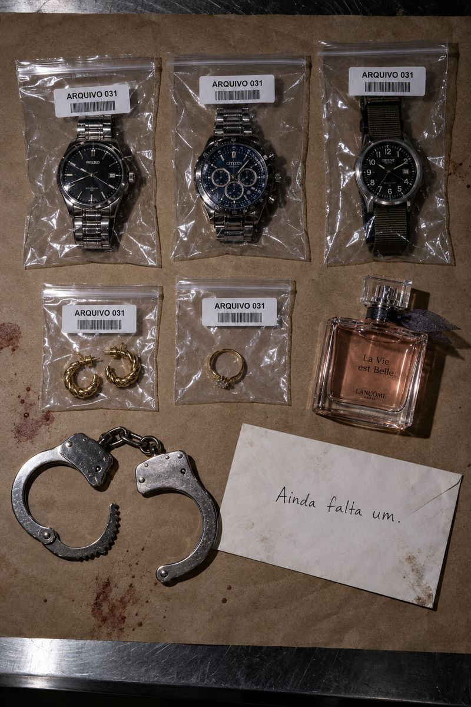
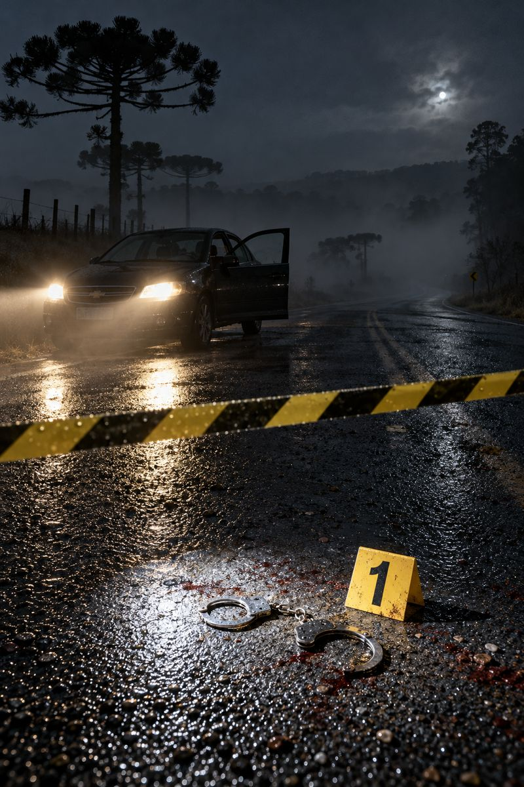

OPERAÇÃO
Tentação
Fatal.
PERICULOSIDADE
Não confundir proximidade com controle.
FICHA DA INVESTIGADA
Codinome:
Nati.
- IDENTIFICAÇÃO CIVIL
- NOME SOB SIGILO
- ALCUNHA
- Mulher Fatal
- CASOS VINCULADOS
- 05 óbitos / 02 sobreviventes
- ÚLTIMA LOCALIZAÇÃO
- Campos Gerais, Paraná
RELATÓRIO DE VINCULAÇÃO
Sete encontros.
Cinco mortes.
O primeiro corpo foi encontrado em uma hospedagem de Ponta Grossa.
Havia sangue nos lençóis, uma marca de mão na parede e dois copos sobre a mesa. A mulher vista entrando com a vítima já havia desaparecido. Não foram constatados sinais de arrombamento.
Outras quatro mortes apresentaram circunstâncias semelhantes: vítimas adultas, identidades falsas e agressões ocorridas durante ou logo após encontros íntimos.
Ela não tinha preferência: entre as cinco vítimas, três homens e duas mulheres.
O desaparecimento de relógios e joias, inicialmente tratado como furto, passou a ser interpretado como coleta de troféus.
Uma testemunha nas proximidades da Estação Saudade forneceu a primeira descrição aproveitável. A desconhecida recebeu o codinome Nati.
LOCAL DO PRIMEIRO CORPO / QUARTO 107

Ela voltou.
Ninguém a impediu.
QUARTO 107 / PERÍCIA

A caixa do relógio
estava vazia.
EXCEÇÕES AO PADRÃO
Duas vítimas.
Uma exceção.
Ela decidiu deixá-los sair.
Um homem e uma mulher. Os dois sobreviventes relataram que a investigada interrompeu a sequência de violência por iniciativa própria. Não houve pagamento ou resgate.
Em ambos os casos, Nati havia estabelecido uma ligação pessoal e permitido que a vítima deixasse o local.
A sobrevivente declarou:
“Perguntei por que eu ainda estava viva. Ela disse que queria me ver de novo.”EXTRATO DO TERMO 02 / IDENTIDADE PRESERVADA
A equipe não identificou um critério seguro para as exceções. A conclusão registrada foi curta:
Sobreviver não significava estar fora do alcance dela.
ITAIACOCA / PONTA GROSSA
A captura
de Nati.
A morte de um cidadão norte-americano levou o agente de ligação do FBI, M-29, a acompanhar a investigação brasileira.
O rastreamento das identidades falsas conduziu a uma hospedagem em Itaiacoca. A equipe brasileira encontrou documentos, três relógios masculinos, um par de brincos, um anel e uma camisa com vestígios de sangue.
Dentro de um envelope havia uma anotação: “Ainda falta um.”

Nati foi presa sem resistência. Ao ver M-29, perguntou se ele era o responsável por levá-la embora.
EXTRATO DE DEPOIMENTO
Ela não ofereceu
resistência.
A primeira entrevista durou 18 minutos. A segunda, 54. Na terceira, o agente solicitou que os demais deixassem a sala. A gravação terminou antes da conclusão.
Sobre os relógios e joias apreendidos.
RESPONDEU“Eu guardo lembranças.”
Por que um homem e uma mulher sobreviveram.
RESPONDEU“Nem todo mundo precisa ir embora do mesmo jeito.”
Se pretendia voltar a matar.
RESPONDEUPermaneceu em silêncio e pediu para falar exclusivamente com M-29.
O agente registrou a colaboração
como um bom sinal.
SALA 2 / TERCEIRA ENTREVISTA
Quem soltou
as algemas?
AVALIAÇÃO DO AGENTE RESPONSÁVEL
O homem que
mudou de lado.
O agente foi avisado. Confirmou que havia entendido.
Uma fotografia de serviço registrou uma marca de batom na gola de M-29. Ele classificou o vestígio como “contato incidental durante procedimento de contenção”.
Depois, passou a solicitar diligências reservadas. As conversas ficaram mais longas; os relatórios, mais curtos.
Na última avaliação, escreveu que Nati apresentava “redução de hostilidade na presença deste agente”.
Nenhum outro integrante confirmou a observação.
Afastamento imediato da investigação.
CIENTE: M-29ASSINATURA SUPRIMIDAO agente recusou o afastamento.
VESTÍGIO / CAMISA DE M-29
Incidental.
Claro.
30 DE OUTUBRO / ÚLTIMO CONTATO
Dois nomes.
Nenhum retorno.
Durante um deslocamento autorizado, Nati não chegou ao destino previsto. M-29 também não se apresentou. As circunstâncias da fuga permanecem sob apuração.
No material deixado pelo agente, foram localizadas duas mensagens e uma folha arrancada do caderno de campo.
Você ainda acha que está me levando presa?
Está tudo sob controle.
As evidências contradizem
essa declaração.
RODOVIA / CAMPOS GERAIS / 30 OUT
Ele não estava
conduzindo ninguém.
ESTRADA RURAL / VEÍCULO ABANDONADO

Ninguém foi levado
à força.
LOCALIZAÇÃO PRESUMIDA / PONTA GROSSA
Ainda juntos.
Ainda à solta.
A última informação indica que os dois pretendem comparecer a uma festa à fantasia em Ponta Grossa.
Ela usará uma peça amarela com inscrições WARNING. Ele portará identificação do FBI e poderá alegar que a mantém sob custódia.
O agente não pediu reforço, não informou o destino e foi visto oferecendo o próprio braço à fugitiva.
A operação de captura foi encerrada por comprometimento do responsável. A procura pelos dois continua.
- ALVO / NATI
- Não contida. Ainda acompanhada.
- AGENTE / M-29
- Sob investigação. Possível cúmplice.
NÃO ANEXAR À CÓPIA DE CIRCULAÇÃO
Uma última
declaração.
“Eu faria
tudo de novo.”
Ele foi atrás de uma mulher procurada.
Agora é procurado com ela.
Toque na folha ou deslize para virar. Também pelas teclas ← →
Capa do dossiê.